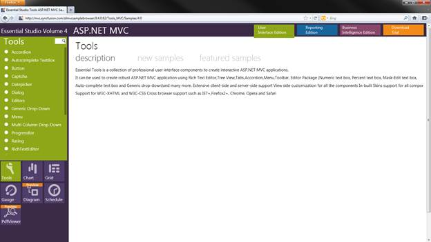

When the filter feature is enabled in the MultiColumnDropDown control, you can filter data from multiple columns at the same time so that the data filtered is specific to your need.
Clicking the filter icon opens up a menu of fields that can be filtered out.
When selecting a submenu item, a separate dialog box opens and displays an advanced filter drop-down that lists the available filter operators for the corresponding column and provides text boxes. You can type a string to filter out whatever you require to be filtered from the table.
Where do I find Installed samples?
To view the samples:
1. Open the Syncfusion Dashboard. The Essential Studio User Interface Edition window is displayed by default. Select ASP.NET MVC from the panel on the left side of the window.
2. Click the Run Samples button. The Essential Studio for ASP.NET MVC sample browser is displayed.

Figure 329: Essential Tools MVC Edition Sample Browser
3. Select Grid.
4. Select any sample from the Filtering tab under Multicolumn DropDown and browse through the features.
Properties for Filtering in the MultiColumnDropDown Control
The properties that are used to implement filtering under the MultiColumnDropDown control are tabulated below.
|
Property |
Description |
Type of property |
Value it accepts |
Any other dependencies |
|
AllowFiltering |
Enables the Filtering feature. Default value is False. |
bool |
True/false |
NA |
Methods
These are the methods used to implement filtering under the MultiColumnDropDown control:
|
Name |
Parameters |
Return type |
Descriptions |
|
AllowFilter(bool) |
bool |
IMultiColumnDropDownBuilder<T> |
Used to enable the Filtering in MultiColumnDropDown |